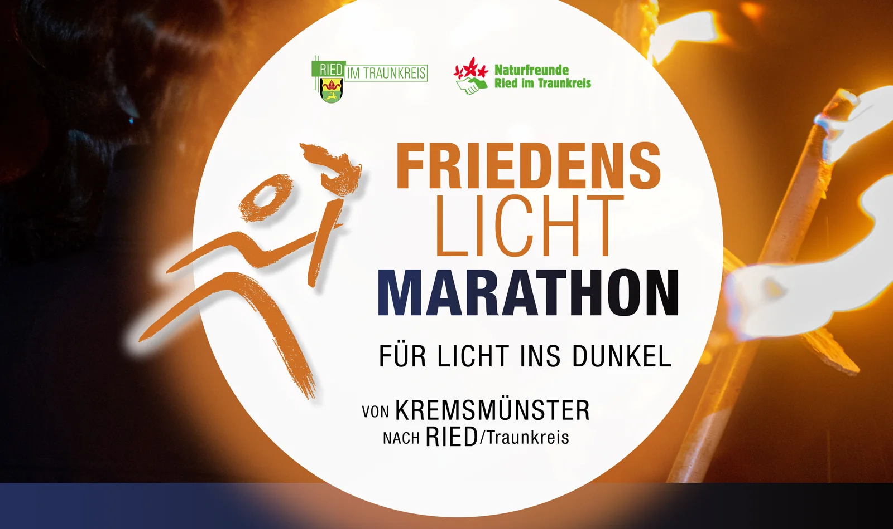

Laufen
Das Friedenslicht gemeinsam von Kremsmünster nach Ried tragen. Im Mittelpunkt steht das gemeinsame Tempo, nicht der Wettkampf.

20 Jahre · 2006–2026
Das Friedenslicht gemeinsam von Kremsmünster nach Ried tragen. Im Mittelpunkt steht das gemeinsame Tempo, nicht der Wettkampf.
In der Walkinggruppe unterwegs sein und zum gemeinsamen Abschluss am Pfarrheim ankommen.
Kinder, Familien und Vereine stoßen bei der ehemaligen Kupferstube dazu – mit Laternen, Musik und einem gemeinsamen Ziel.
Treffpunkt am Gemeindeplatz Ried im Traunkreis
Gemeinsame Abfahrt nach Kremsmünster
Andacht in Kremsmünster
Start der Lauf- und Walkinggruppe
Formierung zum gemeinsamen Lichterzug bei der ehemaligen Kupferstube
Übergabe des Friedenslichts beim Pfarrheim und gemeinsamer Ausklang
Die Zeiten basieren auf dem Ablauf 2025 und werden für 2026 noch endgültig bestätigt.
Der gemeinsame Moment
Wer nicht die ganze Strecke läuft oder walkt, kann beim geplanten Schlussabschnitt einsteigen. Kinder bringen Laternen mit, Vereine zeigen Gemeinschaft, Musik begleitet den Einzug. Offen für alle, die ein sichtbares Zeichen für Frieden setzen möchten.
Der Friedenslicht-Marathon unterstützt Licht ins Dunkel und hilft Menschen in Not. Im Mittelpunkt stehen nicht Wettbewerb oder Platzierungen, sondern das gemeinsame Unterwegssein und konkrete Hilfe.
Die Veranstaltung würdigt außerdem jene Helfer, Vereine und Partner, die diese Idee seit vielen Jahren tragen.
Vorläufig ca. 11,2 Kilometer · Streckenlink aus 2025
Vorläufig ca. 8,2 Kilometer · Streckenlink aus 2025
Geplanter Zustieg bei der Weigersdorfer Kirche gegen 16:30 Uhr · selbstständige Anreise
Nein. Neben Lauf und Walking ist ein gemeinsamer Lichterzug über die letzten rund 500 Meter geplant. Für eine kürzere Laufvariante ist außerdem ein Zustieg in Weigersdorf vorgesehen. Die endgültigen Details werden vor der Veranstaltung bestätigt.
Ja. Gerade der letzte gemeinsame Abschnitt ist für Kinder, Familien, Vereine und alle Bewohner gedacht. Für Kinder sind Laternen statt offener Fackeln vorgesehen.
Nein. Das gemeinsame Erlebnis und der soziale Zweck stehen im Vordergrund. Die Laufgruppe orientiert sich an einem gemeinsamen Tempo.
Die Online-Anmeldung für 2026 ist noch in Vorbereitung. Sobald das offizielle Formular freigegeben ist, wird es hier verlinkt.
Datum und Treffpunkt sind bestätigt. Die Streckenlinks und Ablaufzeiten basieren auf 2025; einzelne organisatorische Details können sich bis zur Veranstaltung noch ändern.
Organisation:
Alexandra Stinglmair · +43 664 4383125
Manfred Dietachmair · +43 699 10992735
Offizieller Vereinskontakt für allgemeine Rückfragen:
ried-traunkreis@naturfreunde.at
Zur offiziellen Kontaktseite ↗